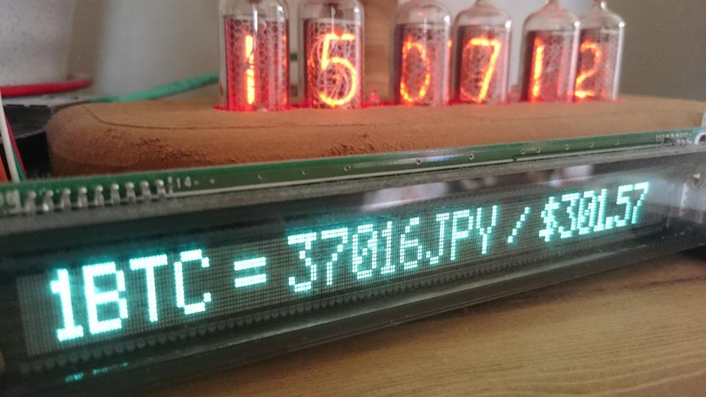

これまでに作った作品
電子工作などで僕が今までに作った作品を抜粋して紹介します。
家電と連動したインターネットを用いた見守りシステム
高校２年生のときに製作したデバイスです。
Arduino互換のESP-WROOM-02(ESP8266)という
比較的安価に入手できるWiFiモジュールを用いることで、
およそ3000円程度で製作可能な見守り装置の開発に取り組みました。
利用者と見守る側の両方にとって使いやすいデバイスを目指して色々と試行錯誤しました。
いくつかの賞もいただき一番実用的な作品だったと思います(?)
オーディオスペクトラムアナライザ
2回後期の電気電子回路演習の最終課題で製作しました。
12バンド×ステレオ2ch(LR)のオーディオスペクトラムアナライザです。
マイコンにはESP32を用いてLEDマトリックスも製作しました。
NeoPixel WS2812BのおかげでLEDの制御はソフトで頑張れます。
電源装置を下宿から持ってこないといけないほど電流を食うのが難点です。
いつか立て看サイズのフルカラーLED看板を製作したいですね!!
エアホッケーロボット
2018年度の第60回11月祭の機械研究会ブースでの展示で、
1回生有志で共同製作を行ったエアホッケーロボットです。
Webカメラによる画像認識で得た座標点を元に、
マレットを制御しパックを打ち返します。
短期開発でのロボット製作の苦しさと
無邪気な子供の怖さを思い知ったNFでした...
リコーダー自動演奏ロボット
2019年度の機械研究会の新歓ロボットとして共同製作したものです。
マイコン制御含めたソフト全般/回路の一部を担当しました。
PCからのMIDI信号をUSB-MIDIとしたArduinoで受け取り、
信号の音階に対応した運指にサーボモータを制御しています。
Bitcoin Price Ticker
 中学３年生のときに作ったデバイスです。
Arduino UNO + Arduino Ethernet Shield R3で、
インターネット経由でBitcoinの価格を取得し表示させています。
蛍光表示管(VFD)の光がとても美しいので気に入っていました。
この頃に戻ってビットコインをたくさん買っていれば、
今頃お金持ちだったでしょうね....
音割れポッター with BadUSB
Digisparkマイコンを使用して
任意のPCで音割れポッターを流すBadUSB(?)です。
HIDデバイスのキーボードとして認識されます。
Powershellでps1ファイルを自動で実行後、
Windowsシステムの音量を強制的に100%に設定し、
Web上から自動で音源をダウンロードし
再生してくれる親切なとても仕様です。